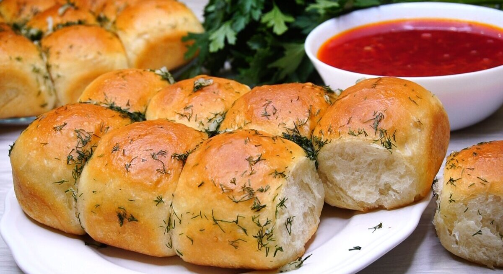

Recipes Pampushka

Description
A simple recipe for ideal pampushki for borscht! Cook them in a Cosori air grill - it will be incredibly tasty and extremely healthy
Ingredients
- Milk 140 ml
- Chicken egg 1 pc
- Salt ½ tsp
- Sugar ½ tbsp
- Dry yeast 1 tsp
- Flour 280 gr
- Butter 60 gr
- Salt to taste
- Pepper to taste
- Dill sprigs, finely chopped 8 pcs
- Garlic clove, finely grated 6 pcs
- Vegetable oil 20 ml
Steps
- Mix salt, sugar, egg and yeast in warm milk (no more than 40°C). Pour the mixture into the flour and mix well
- Melt the butter and add to the dough. Cover the dough with a towel and leave in a warm place for 40-60 minutes
- Divide the dough into parts, knead and roll into small buns (approximately 50 g each). Place on a sheet of baking paper and leave for another 15-20 minutes
- Place the mesh tray in the Cosori airfryer basket
- Select the “Preheat” program, set the temperature to 160℃, then press Start/Pause
- Place the paper with the buns on the preheated mesh tray. Select the “Bake” program or manually set the temperature to 160℃ and time to 20 minutes, then press Start/Pause
- Mix vegetable oil, garlic, dill, salt and pepper. Grease the finished buns with the mixture
- Serve warm with borscht
All Recipes